朝鲜人民军又在整大活了！根据朝中社8月4日报道，当天，朝鲜人民军举行了向导弹兵部队移交装备的仪式。
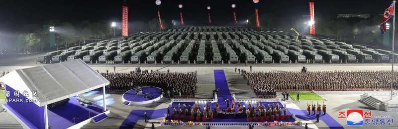
但这仪式不整不要紧，一整给人吓了一个跟头，移交的装备居然是足足250台火星-11丁型战术导弹发射车！当这么多发射车如山岳一般排开的时候，肃杀的气氛真让人须发倒竖。
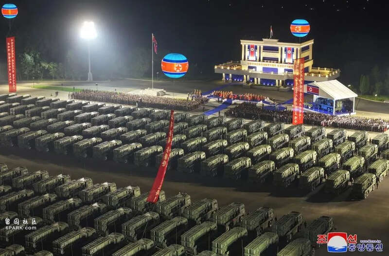
朝鲜从哪儿弄来了这么多导弹发射车，装备的火星-11丁型战术导弹到底是个什么玩意儿，装备对象和装备层级如何，具备怎样的作战能力，承担怎样的战术使命呢？咱们一个一个问题来说好了。
 火星-11丁战术导弹
火星-11丁战术导弹
先说火星-11丁型战术导弹吧，咱们都知道朝鲜在得到不明技术来源支持的情况下，开发出了火星-11战术导弹系列。
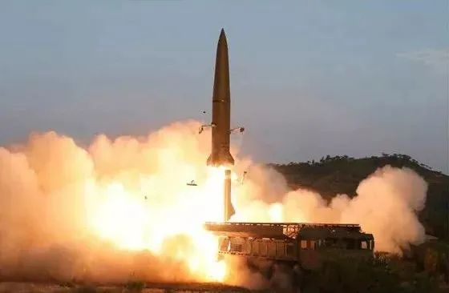
火星-11的基本型按照咱们的合订本，最早出现在2018年2月8日朝鲜人民军建军节阅兵式上，同时在2019年5月4日进行了首次试射，7月26日进行第二次试射，西方赋予其KN-23的编号。
其中，在7月25日的试射中，火星-11就打出了50千米的弹道高度和700千米左右的射程，且根据金正恩同志观看的试射弹道来看，火星-11的弹道似乎是一个助推、下压、滑翔弹道，部分具备高超音速飞行器的特征，这是朝鲜人民军的战术导弹部队首次展现出自身装备的高超音速滑翔器的性能。
火星-11试射弹道
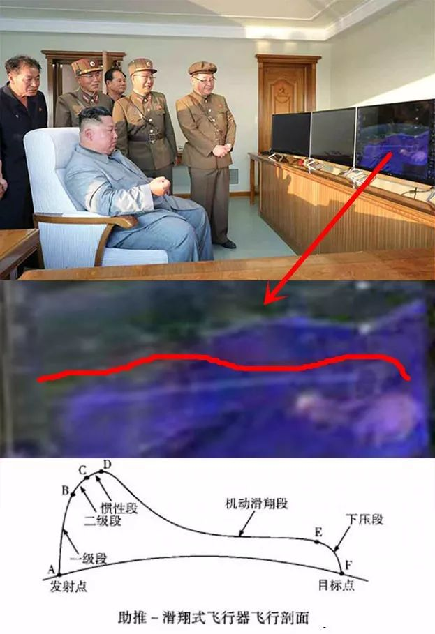
在火星-11基本型试射成功后，朝鲜又先后拿出了多型该战术导弹的改进型。如在2021年3月25日晨，朝鲜人民军导弹兵在咸镜南道试射了两枚战术导弹，后来披露的视频画面显示，试射的武器是一种“超大型火星-11”。
相比基本型的火星-11，“超大型火星-11”使用的发射车似乎是加长了车轴的、外形类似于MAZ-543的TEL车，载弹量也从基本型号的一车两枚变成了一车只有一枚。
“超大型火星-11”
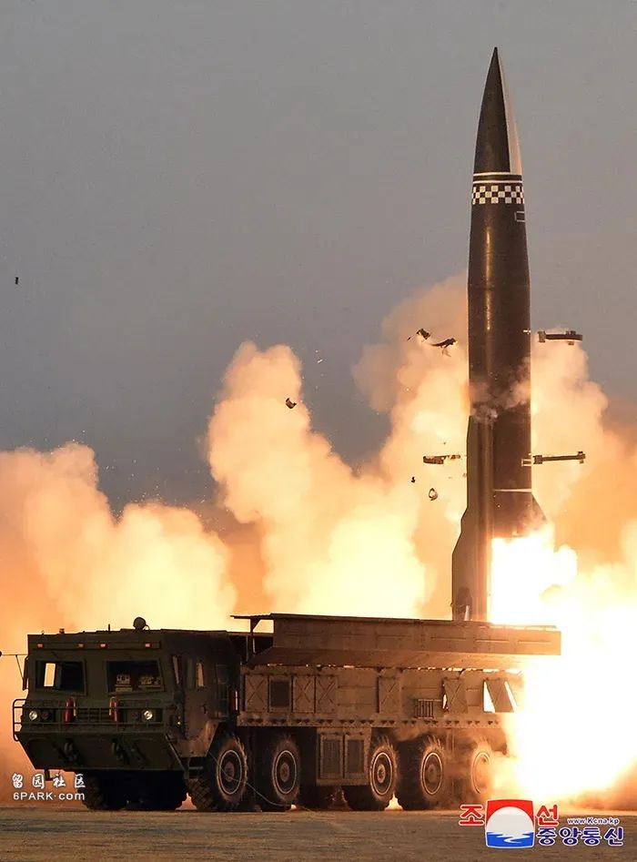
据朝鲜的说法，这枚“火星-11”的投掷重量有了巨大的提高，从基本型号的500千克弹头，提高到了2500千克重型弹头，射程也有一定延伸，这么强大的打击能力足以对美韩联军的强固工事形成严重威胁，这个型号目前为止都没有公开它的具体编号。
有放大版就有缩小版，朝鲜就接连推出了火星-11的两款缩小版：
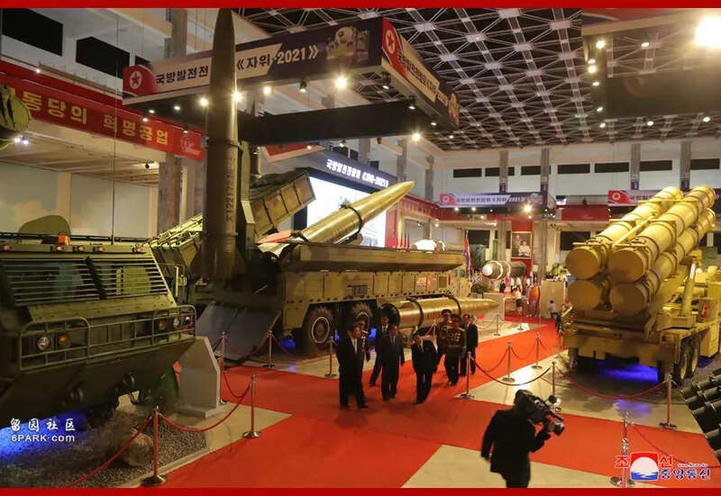
其一是火星-11乙型，该弹最早似乎出现在2019年8月10日朝中社刊发的新闻图片上，相比使用MAZ底盘的火星-11，火星-11乙有两种底盘，分别是履带式底盘和太脱拉轮式底盘，同样可以做到一车两弹，该弹后来又出现在2021年10月在平壤举行的“自卫-2021”国防展览上。
当时，大伊万把该弹和3月试射的“超强版火星-11”搞混了，但后来发现二者并不是一个东西，相比基本型的火星-11，火星-11乙的体积缩小了一些，韩国方面认为其射程不到400千米，大伊万还把它称作“主体ATACMS”。
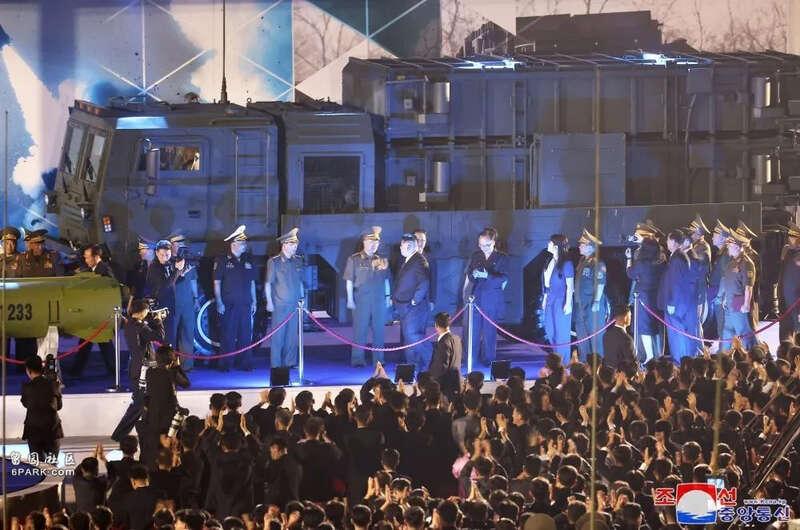
其二，就是这次交付给朝鲜人民军的主角火星-11丁型了，该弹最早似乎出现在2022年4月朝鲜人民军组织的导弹试射中，同样使用朝鲜仿制的太脱拉卡车底盘发射。相比普遍是一车两弹的火星-11基本型和火星-11乙，火星-11丁可以做到一车四弹，像是超大号火箭炮一样，看起来弹体也比火星-11基本型小巧玲珑了许多。
射程也有所缩短，韩国方面监测到该弹的试射打了一个110千米的射程，25千米的弹道高，大伊万倾向于认为，火星-11丁的性能和美军的ATACMS Block1差不多，射程在150到200千米左右，最大的优势就是可以一车四弹，火力密度有了较大的提升。
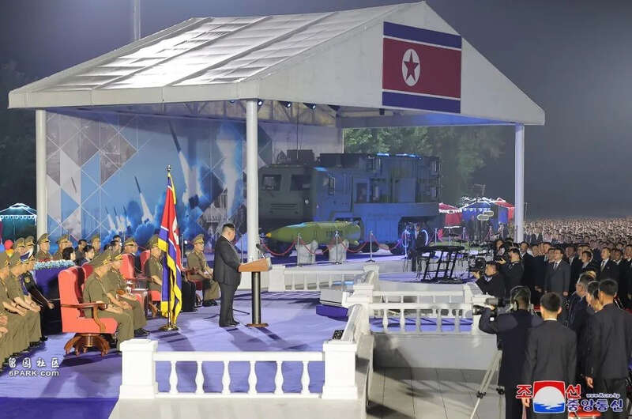
因此总的来说，朝鲜在2019年5月试射成功火星-11基本型后，在短短三年内推出了三款改进型，包括紧凑型的火星-11乙，袖珍型的火星-11丁，还有个超大型的火星-11，大伊万认为可能是火星-11丙。使用的底盘包括MAZ底盘，太脱拉底盘，履带式底盘三种，预计火星-11乙和火星-11丁的发射车通过更换发射模块，是可以互相兼容弹种的。
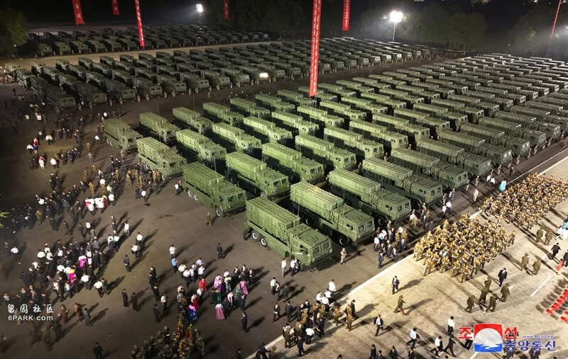
此次交付的250辆火星-11丁发射车，看起来基本都是使用太脱拉卡车底盘的发射车，这可能是因为朝鲜在履带式和TEL特车产量方面还有问题，但250辆载重卡车底盘还是不难弄到的，自产进口都行。
 装备的部队
装备的部队
那么，这250台崭新的火星-11丁型战术导弹发射车，要装备给哪个层级的部队？还是去翻之前的新闻好了。
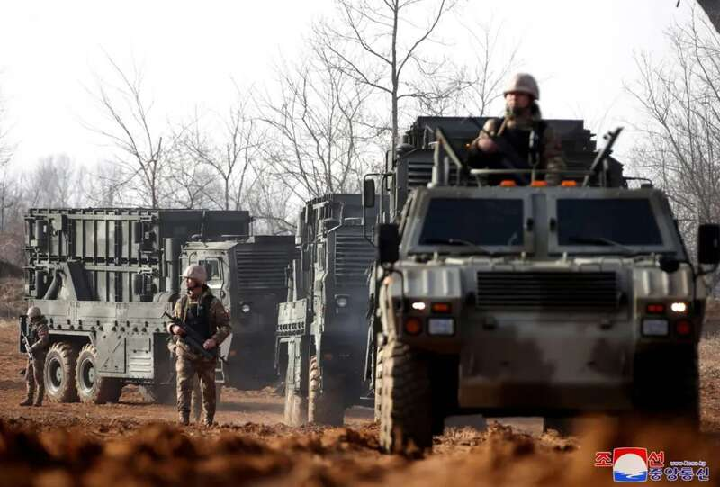
2023年3月10日，朝中社发布过一则新闻，表示在3月9日下午，朝鲜人民军第8火力突击中队，实施了一次对美韩军机场目标进行集群火力突击的战术演练。演练过程中，第8火力突击中队以承担阵地警卫任务的轮式装甲车作为先导，引导多台火星-11丁型战术导弹占领发射阵地，发射车进入阵地后立刻展开放列，做好准备后待命发射。
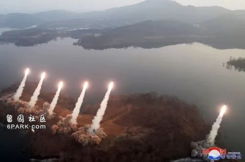
从视频画面显示，有6台发射车同时开火射击，由于这个第8火力突击中队貌似是导弹总局旗下单位，可能意味着该中队是火星-11丁型战术导弹的样板单位。这也就意味着，火星-11丁型战术导弹一个中队（连）装备6台发射车，类似于炮兵连，是一个6发射车连。
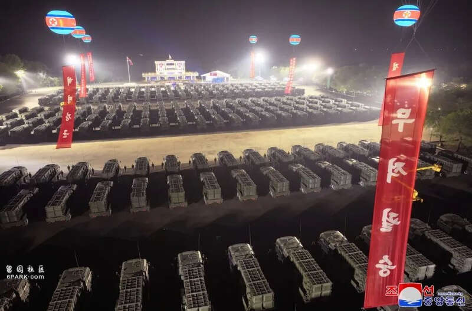
因此，按照一个炮兵营下辖三个炮兵连的三三制编制体制，预计朝鲜人民军装备火星-11丁型战术导弹的营将下辖18台发射车，关键是搞不清楚朝鲜人民军一个战术导弹旅下辖多少发射营。按照俄军伊斯坎德旅的编制，一个旅下辖3个发射营，但是一个发射营实际上只有4台发射车。
如果朝鲜人民军的火星-11丁在旅到营一级建制上同样采用三三制，那么意味着一个旅可以有54台发射车，这250台发射车正好可以装备给4个火箭旅，然后还可以确保多出34台发射车用于备用，日常训练等。
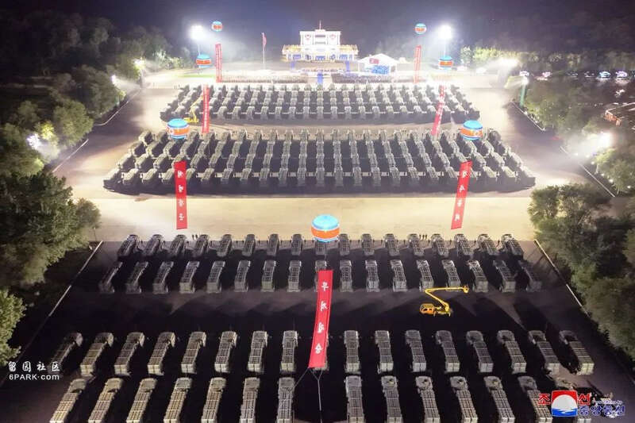
有大佬指出，目前朝鲜人民军在三八线一线的前线军团正好有4个，且朝中社的新闻报道指出，这些火星-11丁型战术导弹，装备对象是朝鲜“边境一线部队”。这报道具体所指的正好是这四个前线军团，具体层级应该是军团直属远程火箭炮旅，装备对象和数量都能对得上，这就是火星-11丁的装备对象和层级。
 装备的作用
装备的作用
既然是装备给前线军团的军属战役炮兵火力，那么打击目标就不用多说了，其打击范围可以覆盖军团级战役地幅正面和纵深内的目标就够了。
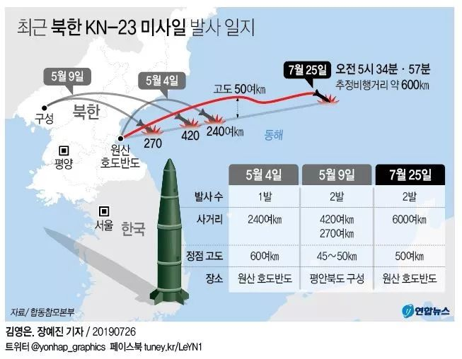
咱们举例说明，比如位于前沿和纵深的美韩联军主要筑垒地域，野战筑城设施，桥梁涵洞隧道，还有比如兵力集结地，屯兵点，各种技术装备的密集区域等。考虑到火星-11丁必然有的惯导/全球定位系统制导功能，那么预计在战役纵深打击敌单个技术兵器，比如远程火箭炮，坦克装甲车，雷达站/防空系统等，也必然是它的作战使命。
之前朝鲜人民军导弹总局组织的试射还包括了压制美韩联军机场目标，看来火星-11丁也要遂行这一任务，毕竟韩国的纵深就那么大一点点，要使用火星-11基本型去打，多多少少有些大材小用，那还是用火星-11丁这种袖珍版去打比较好。
具体的火力杀伤链构筑，估计和M270A1/A2，M142远程火箭炮比较类似，靠无人机和敌后侦察单位来进行目标指示与打击效果评估，发现目标后按照计划内目标和计划外目标，使用营级射击指挥系统来组织火力。
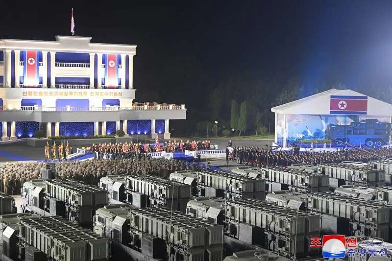
当然，这牵涉到复杂的指挥和火控自动化能力，目前朝鲜人民军也只是公开了火星-11丁的发射车，指挥车、装弹车、测地车等装备都没有公开，更没有公开诸如指挥车内部的视频画面，这让我们对该系统的自动化水平无从得知，这里就不再赘述。
如何看待公开亮相
说一千道一万，咱们最震撼的，还是朝鲜人民军上来就一口气亮出了250台战术导弹发射车。
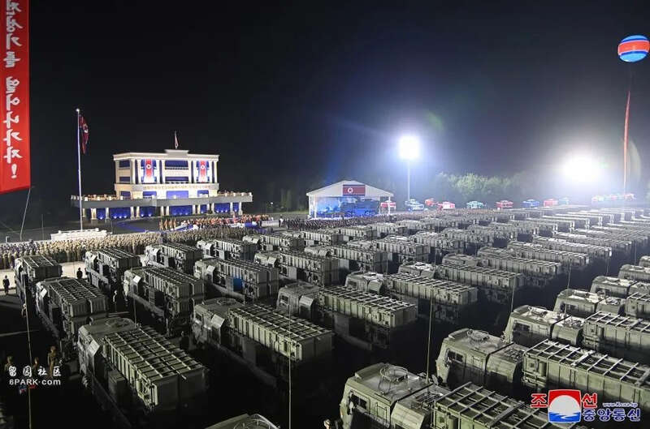
咱们做个对比哈，按照军力均衡2023版的说法，美国陆军全军也只装备了368台M142型“海马斯”远程火箭炮和226门M270A1/A2型远程火箭炮。而且注意，美军是没有227毫米以下的火箭炮的，所有火箭炮都在这里边了，而且还要兼顾战术导弹的使用。
朝鲜人民军这是一次就亮出了接近美国陆军全军一半的远程火箭炮数量，这还没有算朝鲜人民军中数量更多的其它口径火箭炮。
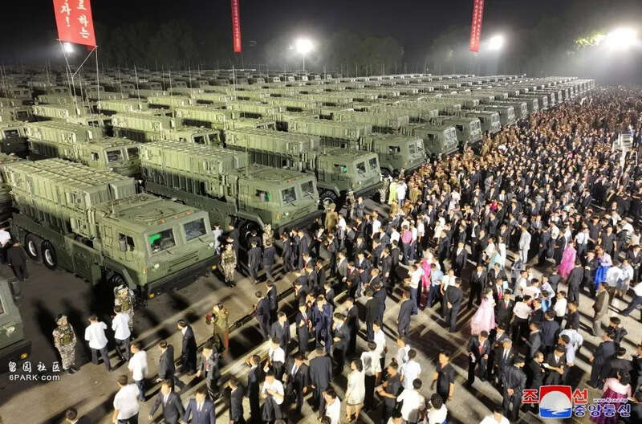
至于俄罗斯陆军，混的比美国还惨……根据2023年军力均衡的说法，俄罗斯陆军现役的一共也就150门BM-27“飓风”和120门BM-30“龙卷风”，其中具备打精确制导火箭弹的9K515“龙卷风-S”数量甚至只有20门。这简直没地方说理去了，堂堂俄罗斯陆军，一向秉持大炮兵主义的俄罗斯陆军，居然全军的远程火箭炮数量还不如朝鲜人民军一次亮出来的数量多。
从这里可以看出来，所谓的东亚怪物房，还真是名不虚传啊。